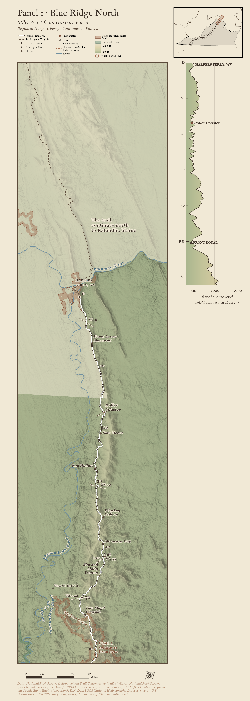
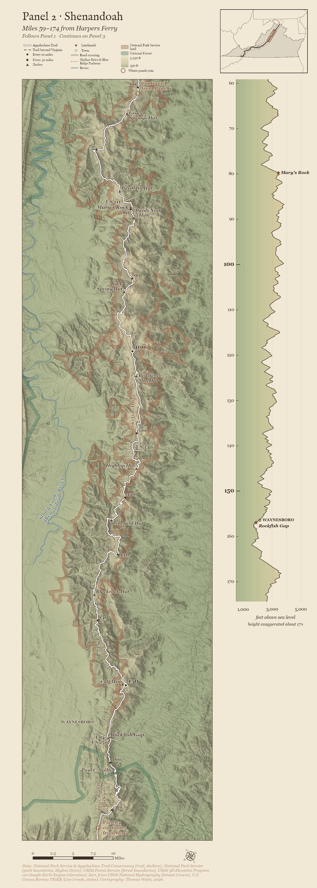
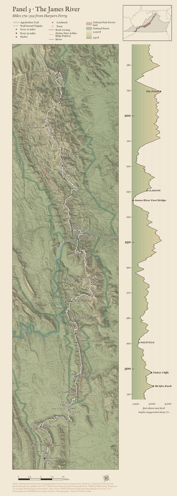
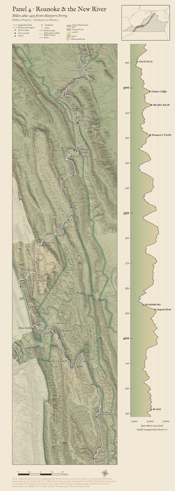
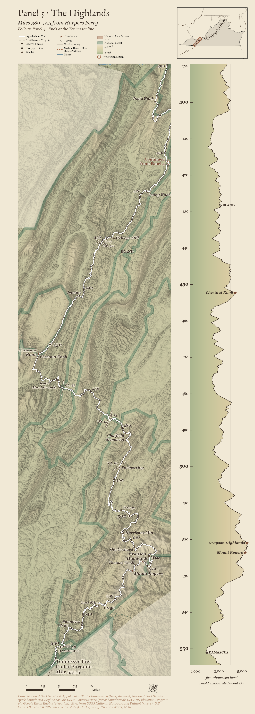

The Appalachian Trail from Harpers Ferry to the Tennessee line
About a quarter of the Appalachian Trail runs through Virginia. Scroll down to walk it, southbound, from Harpers Ferry to the Tennessee line in five maps.
Like John Ogilby's road maps of 1675, each map follows the trail rather than the compass, so check the north arrow on each one. Beside every map, the elevation profile shows the climbs and descents. Match its mile numbers to the mile markers on the map.
Best viewed on a laptop or desktop. On a phone, tap any map to open it full size and zoom in.




